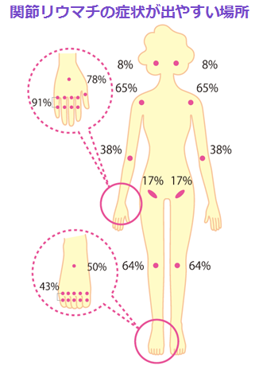

関節リウマチの診断
- ●関節リウマチの診断に必要な項目
１つ以上の関節の腫れがある
（触診、超音波、MRI検査のいずれか）

●腫れまたは痛みのある関節の数（診察）
●血液検査値異常の有無
（リウマトイド因子、抗CCP抗体）
●関節炎の持続期間
（6週間未満／6週間以上）
●炎症反応の有無（CRP、ESR）
【2010 ACR/EULAR関節リウマチ分類基準】

Harris ED Jr: Clinical feature’s rheumatoid
arthritis. Kelley’s Textbook of
Rheumatology, 6th ed, pp967-1000, 2001